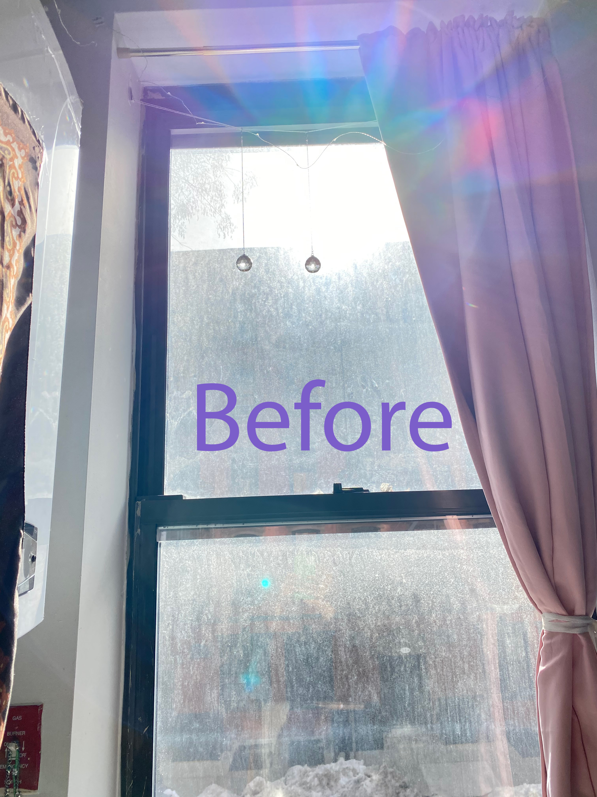
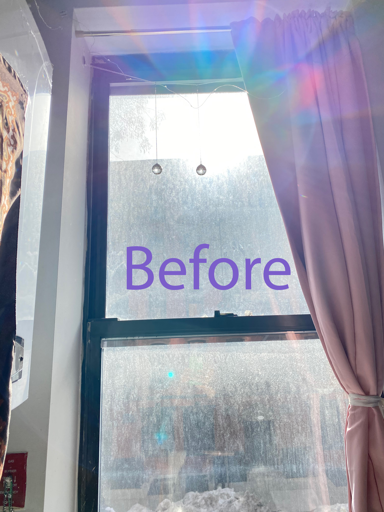
 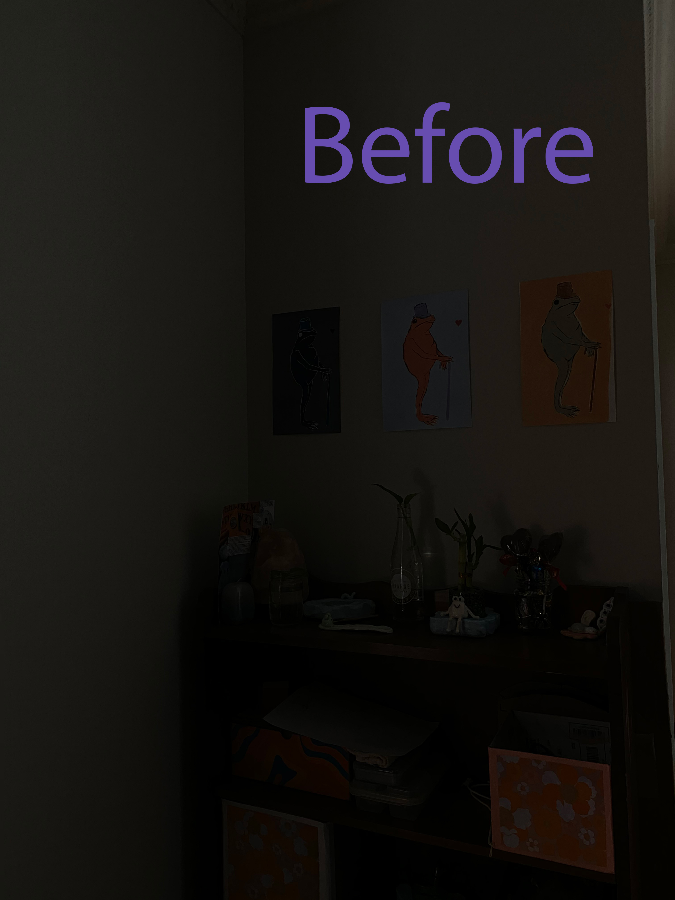
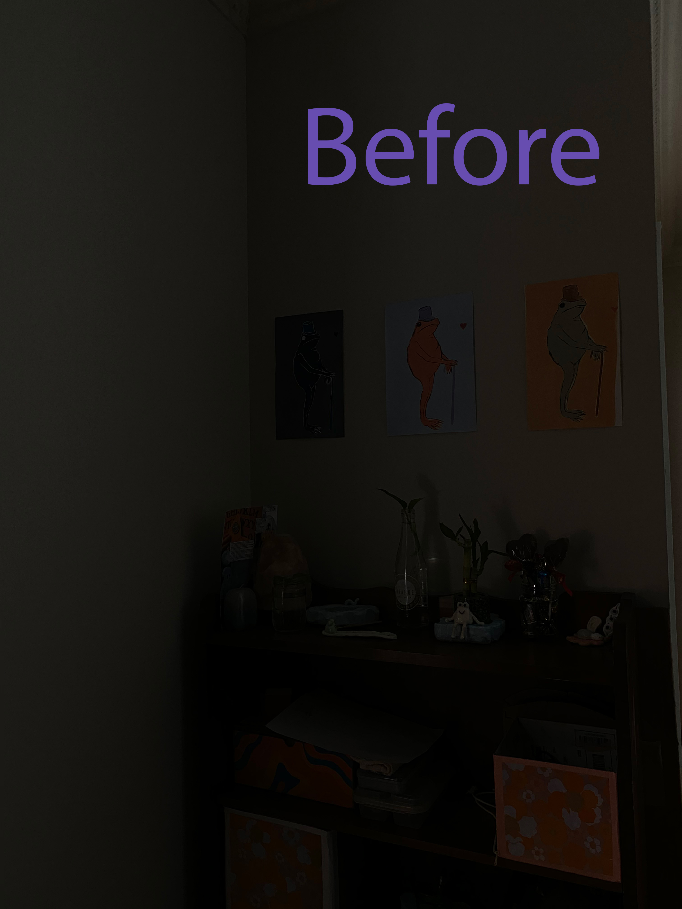


This assignment was a way of practicing resizing and changing the composition of images through preview. It also was a way to practice creating a new page and link and adding it to the original page (add photos.html to index.html)
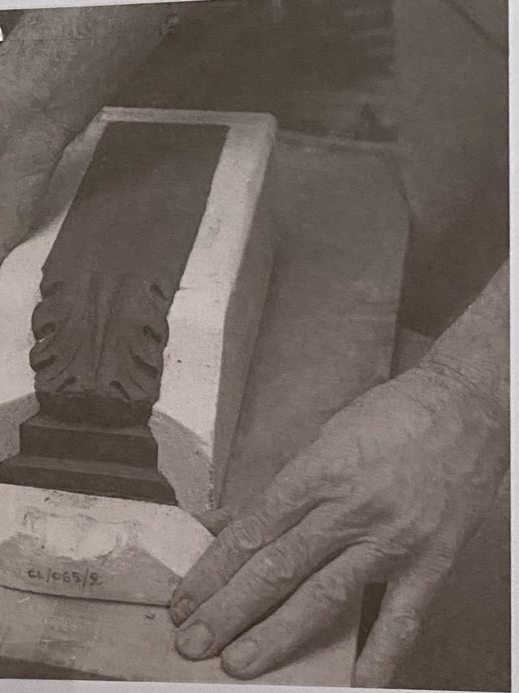 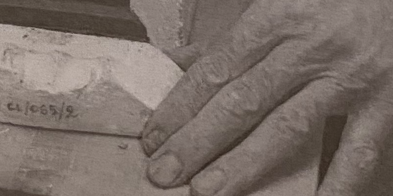 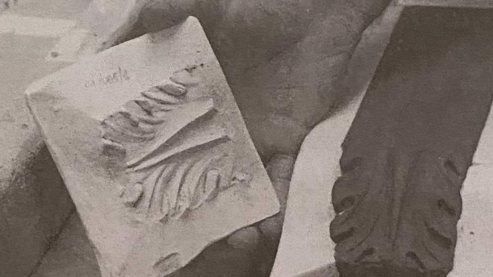 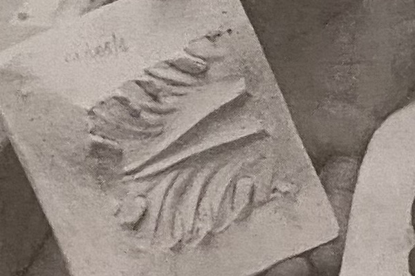 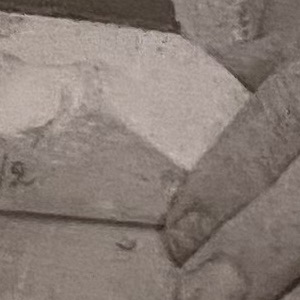
Pictures taken by Caitlyn on Ave A. A trial of photoshop involving altering/editing images.
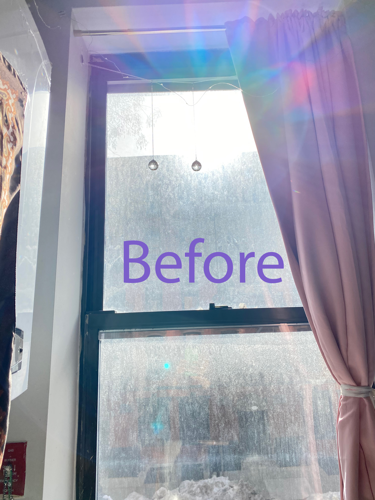
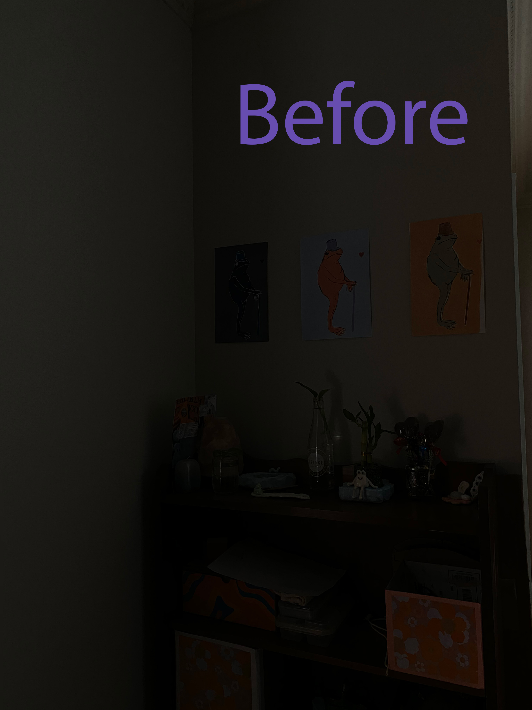